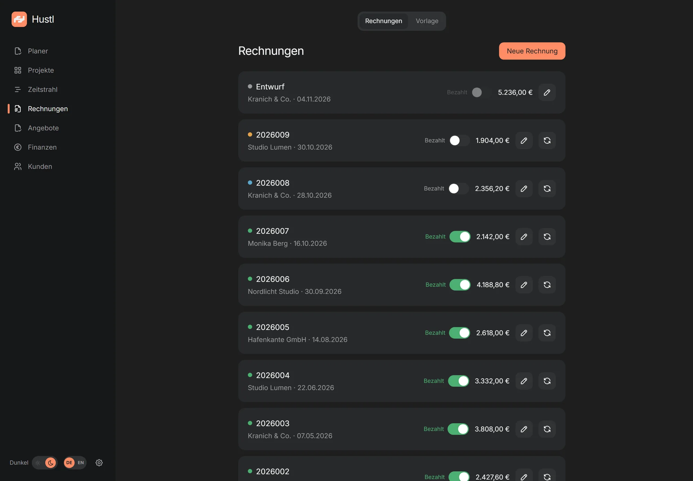
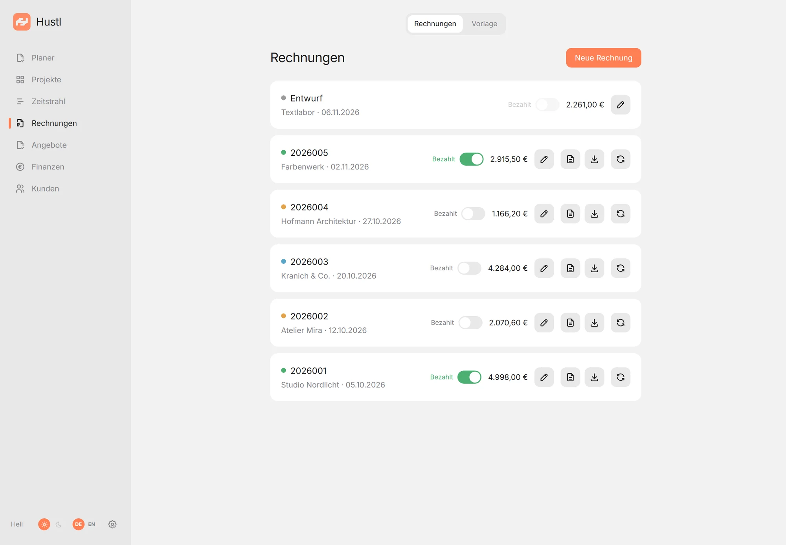
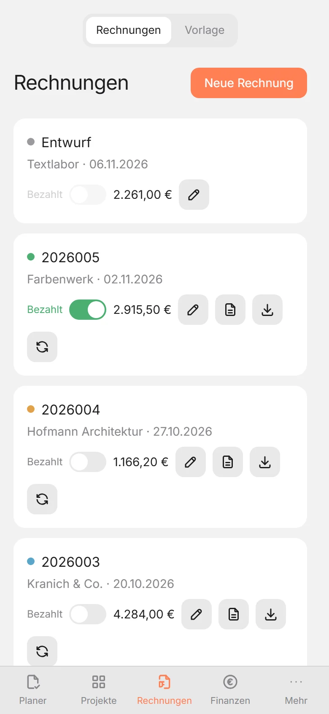
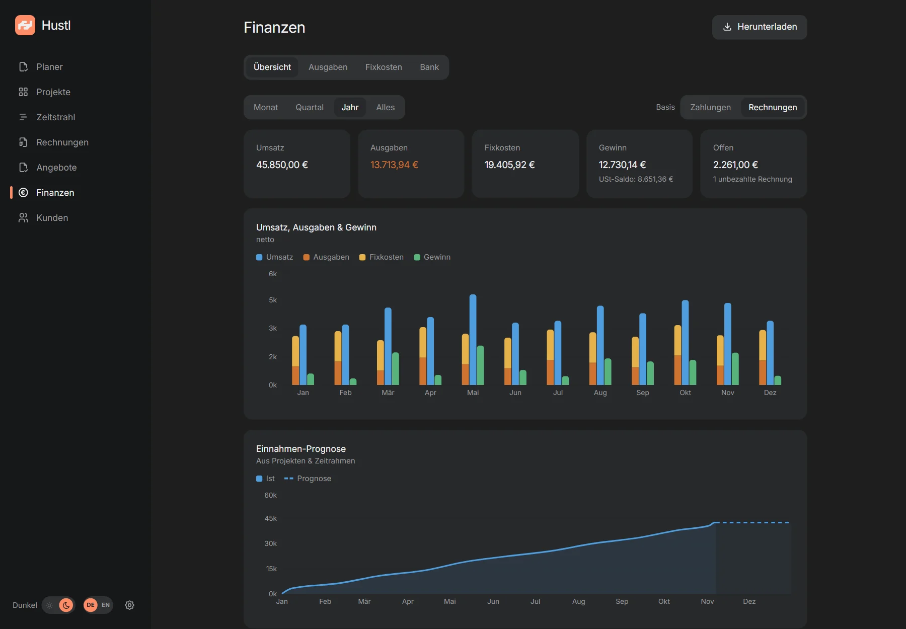
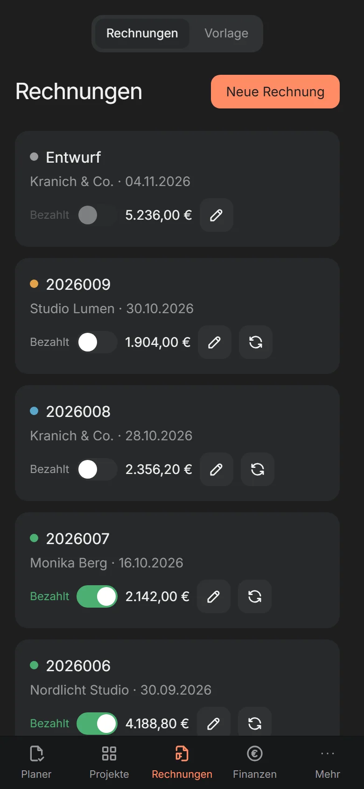
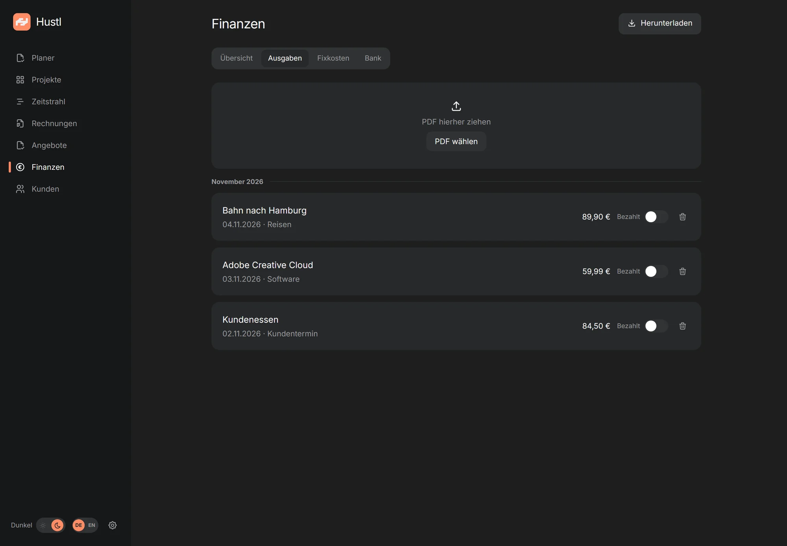
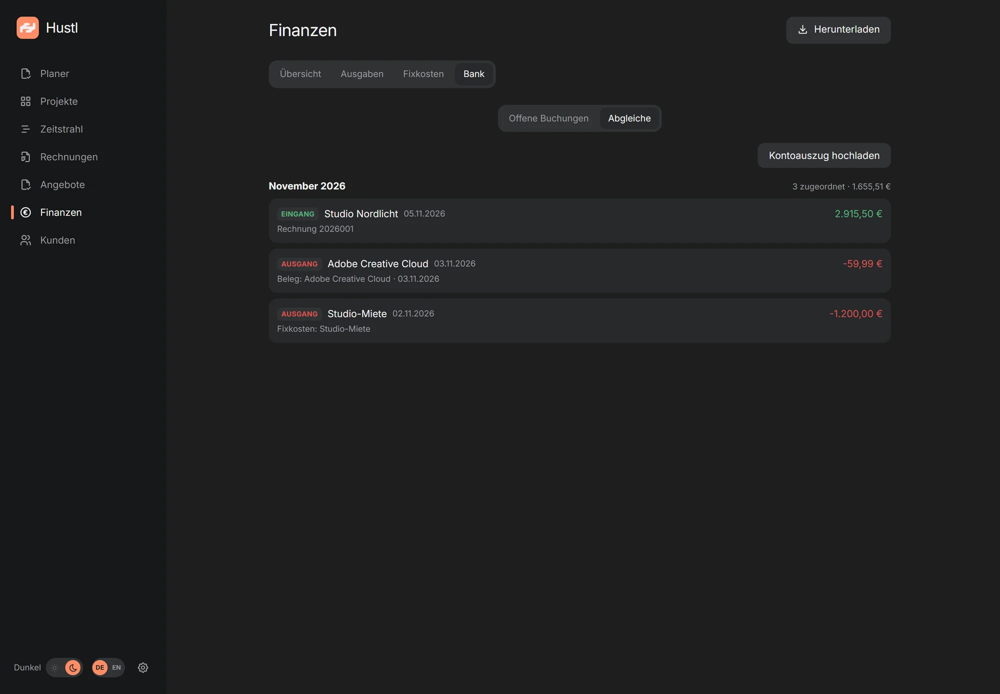
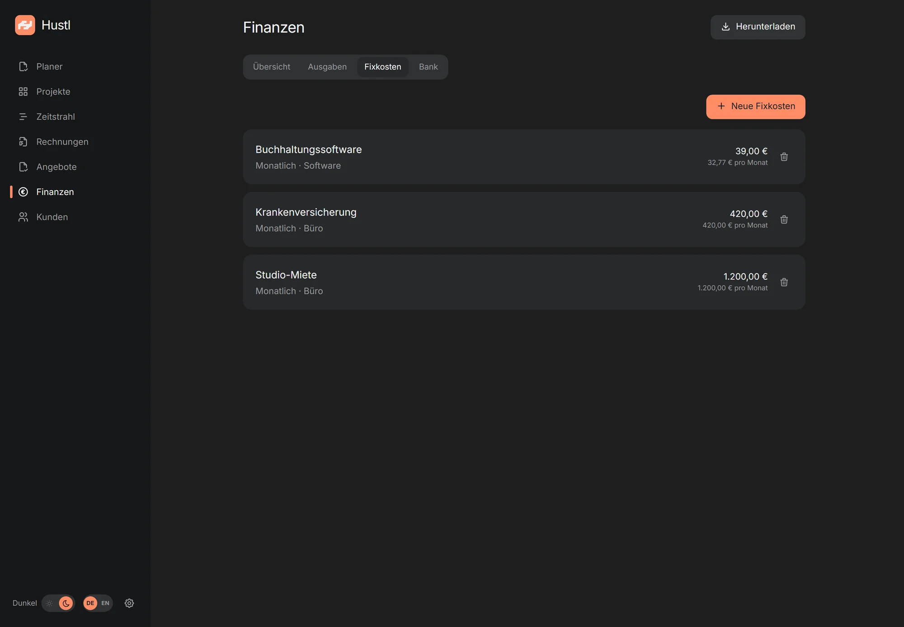

Rechnungen
Entwurf, Nummer, PDF. Mit fortlaufendem Nummernkreis, Storno und Korrektur, ohne Excel-Tabelle daneben.
Self-hosted · Open Source · Für Freelancer
Hustl bringt Rechnungen, Angebote, Projekte, Aufgaben und Finanzen in eine ruhige App, auf deinem eigenen Server. Kein Cloud-Konto, keine Telemetrie, keine monatliche Software-Miete.

Alles an einem Ort
Keine zehn Tools, keine doppelte Buchführung. Hustl deckt den Weg von der ersten Idee bis zum Monatsabschluss ab, ohne dich mit Software zu beschäftigen, die du nicht brauchst.
Entwurf, Nummer, PDF. Mit fortlaufendem Nummernkreis, Storno und Korrektur, ohne Excel-Tabelle daneben.
ZUGFeRD / Factur-X als hybrides PDF/A-3 nach EN 16931. Für Kunden, die digitale Rechnungen erwarten.
Versionen, Status und PDF. Auf Knopfdruck in Kunde und Projekt umwandeln, ohne doppelt zu tippen.
Stunden, Fixpreise und offene Posten. Alles am richtigen Ort, mit einem klaren Blick auf den Zeitrahmen.
Einnahmen, Ausgaben, Fixkosten, Prognose und Monatsexport. Deine Zahlen, ohne Excel-Akrobatik.
PWA auf iPhone, iPad und Desktop. Dazu Desktop-Apps für Windows, macOS und Linux: eine Oberfläche, alle Geräte.
Für wen
Hustl ist für Soloselbstständige und Ein-Personen-Studios, die ihre Zeit lieber in die Arbeit stecken als in fünf verschiedene Tools.
Eine Person pro Instanz. Hustl ist bewusst klein: mehrere Passkeys, keine Rollen oder Freigaben. Das hält die App ruhig und die Daten in deiner Hand.
Projekte, Aufgaben, Rechnungen und Finanzen liegen nebeneinander. Du siehst, was ansteht, was offen ist und was reinkommt, ohne dir alles aus Tabellen zusammenzusuchen.
Hustl gehört dir. Kein Software-Abo, keine Preise pro Platz. Du zahlst nur für Server und Domain, meist 5 bis 15 € im Monat für den Server plus ein paar Euro im Jahr für die Domain.
Rechnungen, Belege und Kundendaten liegen auf deinem eigenen Server. Kein Cloud-Konto, keine Telemetrie. Du kannst sichern, exportieren und die Daten selbst mitnehmen.
Planer & Aufgaben
Datierte Aufgaben, wiederkehrende Routinen und freie Listen leben neben deinen Projekten und Rechnungen. Kein zweites To-do-Tool, kein Kontextwechsel.
Sieh auf einen Blick, was ansteht. Verschiebe eine Aufgabe, wenn sich Pläne ändern. Notiz und Kontext wandern mit.
Kategorien können täglich, wöchentlich oder monatlich zurücksetzen. Buchhaltung, Nachfassen und Studio-Routinen bleiben sichtbar, ohne neu angelegt zu werden.
Undatierte Ideen bleiben in freien Listen, jede Aufgabe kann eine Notiz bekommen, und du siehst, wie konsequent deine Routinen laufen.
Erscheinungsbild
Hustl kommt mit hellem und dunklem Theme. Folge deinem System oder wähle fest eins: gleiches ruhiges Layout, gleiche Daten, kein Neuladen.
Der Umschalter sitzt in der Sidebar. Auf dem Smartphone unter „Mehr“. Die Wahl bleibt auf dem Gerät gespeichert.


Einblicke
Keine Dashboards, die dich erschlagen. Nur die Dinge, die du für Rechnungen, Projekte und Finanzen wirklich brauchst.
Erstelle Rechnungen aus Projekten, finalisiere sie mit einem Klick und behalte offene Posten im Blick. Nummern werden fortlaufend vergeben, PDFs automatisch erzeugt.
Das Dashboard zeigt Einnahmen, Ausgaben und Gewinn, auf Zahlungs- oder Rechnungsbasis. Die Jahresansicht stellt alle zwölf Monate nebeneinander, damit Saisonalität und ruhige Monate auf einen Blick sichtbar werden. Fixkosten und Belege sind schon eingerechnet, die Prognose denkt mit.

Öffne Hustl im Browser und installiere es als PWA. Auf dem iPhone mit Face ID, am Desktop mit Windows Hello. Kein App Store, kein zusätzliches Konto.

Alle Screenshots zeigen fiktive Demo-Daten. Namen, Beträge und Adressen sind erfunden.
Finanzen, Schritt für Schritt
Vier Schritte, keine Excel-Tabelle. Öffne einen Schritt für die Details, die zählen.
Lade ein PDF hoch; Anbieter, Datum, Betrag, Währung und USt werden zur Prüfung vorbefüllt.

Hustl liest die Textebene des PDFs. Scans ohne Textebene brauchen manuelle Felder; das PDF bleibt am Beleg.
Lade einen Kontoauszug hoch. Hustl listet Buchungen und schlägt Rechnung, Ausgabe oder Fixkosten vor.

Aktuell nur N26-PDF-Kontoauszüge.
Eine Buchung kann einer Ausgabe oder einem Fixkosten-Eintrag zugeordnet oder mit einem Beleg als neue Ausgabe angelegt werden. Eine Gutschrift kann eine Rechnung als bezahlt markieren. Der Abgleich verknüpft Datensätze, statt sie doppelt zu buchen.
Miete, Versicherung oder Software einmal anlegen. Monatlich, quartalsweise oder jährlich, mit Start und Ende.

Aktive Fixkosten sind Treffer für Ausgaben im Kontoauszug. Passt eine Buchung, wird sie mit dem Fixkosten-Eintrag verknüpft, statt eine zweite Ausgabe anzulegen.
Die durchgezogene Linie ist realisierter Umsatz nach Rechnungsdatum. Die gestrichelte Linie ergänzt offene Projekt-Pipeline.
Offene Projekte werden am Enddatum addiert, abzüglich bereits berechneter Beträge. Überfällige Projekte landen heute; Projekte ohne Zeitraum werden separat ausgewiesen. Es ist eine Umsatzprognose, kein Gewinn; Ausgaben und Fixkosten sind nicht enthalten.
Installation
Hustl läuft auf deinem eigenen Server. Der Installer nimmt dir Docker, HTTPS (im gebündelten Modus), Autostart und den täglichen Datenbank-Snapshot ab.
Ein kleiner VPS mit 2 GB RAM und eine Domain, die darauf zeigt. Bei den meisten Anbietern ist das in wenigen Minuten eingerichtet.
Ein Befehl holt Hustl, baut den Container und richtet HTTPS (im gebündelten Modus), den Datenbank-Snapshot und Autostart ein. Du wirst nach Domain und E-Mail gefragt.
Öffne den Setup-Link, lege deinen ersten Passkey an und bewahre die Recovery-Codes auf. Danach gehört der Server dir.
Der Agenten-Leitfaden führt dich und einen KI-Assistenten Schritt für Schritt durch die Installation, inklusive Fragen zu VPS, SSH, Domain, Firewall und Backup. Kopieren, einfügen, Fragen beantworten.
Zum Agenten-LeitfadenDu hast noch keinen Server? Der Leitfaden erklärt auch, worauf du beim Anbieter achten solltest.
sudo mkdir -p /opt/hustl && sudo chown "$USER":"$USER" /opt/hustl
git clone https://github.com/bitm4ncer/hustl.git /opt/hustl/src
cd /opt/hustl/src && sudo ./deploy/selfhost/install.shHosting
Der eigene VPS ist der einfachste Weg. Hustl läuft aber auch auf vorhandener Hardware, solange Docker und ein dauerhafter Speicher vorhanden sind.
Hetzner, Netcup, IONOS, Contabo oder ein anderer Anbieter. Der Installer richtet Docker, HTTPS (gebündelt) und den Datenbank-Snapshot ein.
ab ca. 5 € / MonatLinux-Server, Synology/QNAP mit Docker oder ein Heimserver. Der Installer ist für Debian/Ubuntu; auf NAS nutzt du compose.external.yml manuell und richtest Reverse Proxy und Backup selbst ein.
Docker auf arm64, 4 GB RAM empfohlen. Für Zugriff von außen Cloudflare Tunnel oder Tailscale Funnel; stabile Stromversorgung und Backups einplanen.
einmalige HardwareRailway, Render, Fly.io oder ein Cluster: für Erfahrene, wenn die SQLite-Datei auf einem persistenten, blockbasierten Volume liegt. Eine Replica, kein NFS/SMB. Shared Hosting und Serverless ohne Persistent Disk gehen nicht.
für ErfahreneDer Client ist kein eigener Server: Er braucht eine erreichbare Hustl-URL. Die Standalone-App läuft ohne Server. Ein kostenloses Cloud-Kontingent (z. B. Oracle Cloud Free Tier, ARM) kann zum Ausprobieren reichen, Verfügbarkeit und Bedingungen ändern sich.
Download
Zwei Downloads: Hustl Standalone läuft lokal ohne Server. Hustl Client verbindet sich mit deiner eigenen Instanz.
PWA statt Download: Öffne deine Hustl-URL im Browser und wähle „App installieren“ (Chrome/Edge) oder „Zum Home-Bildschirm“ (iOS). Kein Installer, keine Updates, einfach die Website.
Hustl ist Open Source (ISC), die Builds sind unsigniert. Windows zeigt SmartScreen: „Weitere Informationen“ → „Trotzdem ausführen“. Unter macOS 15+ hilft nur noch Systemeinstellungen → Datenschutz & Sicherheit → „Dennoch öffnen“. Eine signierte macOS-Standalone-Version mit automatischen Updates folgt, sobald die Nachfrage sie trägt.
Alle Releases auf GitHubFAQ
Die wichtigsten Antworten, bevor du einen Server mietest.
Die App ist kostenlos und Open Source (ISC). Du zahlst nur deinen Server (je nach Anbieter etwa 5 bis 15 € im Monat) und eine Domain, meist 5 bis 30 € im Jahr (0,40 bis 2,50 € im Monat). Der Preis hängt von TLD und Anbieter ab; Aktionen im ersten Jahr sind oft günstiger als die Verlängerung. Kein Abo, keine Lizenzgebühr.
In einer SQLite-Datenbank und als PDFs auf deinem eigenen Server. Es gibt keine Cloud, kein Konto bei uns und keine Analytics. Backups verlassen den Server nur, wenn du selbst ein Offsite-Ziel einrichtest.
Für PWA und Client ja. Hustl ist bewusst self-hosted und kein gehosteter Dienst; ein kleiner VPS reicht, der Installer richtet Docker, HTTPS und einen täglichen Snapshot ein. Für den Einstieg gibt es die Standalone-App, die lokal ohne Server läuft.
Hustl ist für eine Person pro Instanz gedacht. Du kannst mehrere Passkeys und Geräte nutzen, aber es gibt keine Rollen, Teams oder getrennten Benutzerkonten.
Ja, wenn Docker und ein dauerhafter Speicher vorhanden sind, zum Beispiel auf einer Synology/QNAP-NAS, einem Heimserver oder einem Raspberry Pi. Für Zugriff von außen brauchst du einen Reverse Proxy oder einen Tunnel wie Cloudflare Tunnel. Die Hosting-Optionen stehen oben.
Ja, als PWA. Öffne deine Hustl-URL in Safari, tippe auf „Teilen“ und wähle „Zum Home-Bildschirm“. Die Anmeldung läuft über Face ID oder Touch ID.
Ein Login ohne Passwort: Face ID, Touch ID, Windows Hello oder ein Sicherheitsschlüssel. Du kannst mehrere Geräte hinzufügen und zehn Recovery-Codes aufbewahren, für den Fall, dass ein Gerät verloren geht.
Hustl nutzt Passkeys, HttpOnly-Session-Cookies und CSRF-Schutz. HTTPS übernimmt dein Reverse Proxy (im gebündelten Modus Caddy). Updates und Backups liegen in deiner Verantwortung. Der Installer legt täglich einen Datenbank-Snapshot an; PDFs und Belege kommen nur mit restic oder dem Vollarchiv dazu.
Ja. Du kannst ein Vollarchiv als ZIP mit Datenbank, allen PDFs und CSV-Dateien herunterladen. Für die Steuerberatung gibt es zusätzlich einen Monatsexport.
Nein. Hustl ist absichtlich self-hosted, damit deine Rechnungen und Kundendaten bei dir bleiben. Du kannst die App aber auf einem Server deines Vertrauens oder bei einem Anbieter deiner Wahl betreiben.
Hustl erzeugt hybride PDF/A-3-Dateien nach EN 16931 (ZUGFeRD / Factur-X). Geprüft wird das Datenmodell, nicht die vollständige XSD-/Schematron-Konformität. Vor dem ersten echten Versand deshalb eine Beispielrechnung mit dem offiziellen KoSIT-Validator testen.
Bereit?
Keine Cloud, kein Abo, keine Daten bei einem Dritten. Nur du, deine Rechnungen und ein Server, der dir gehört.